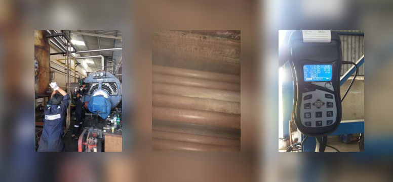
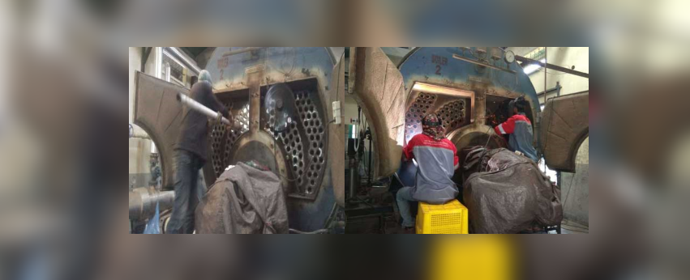
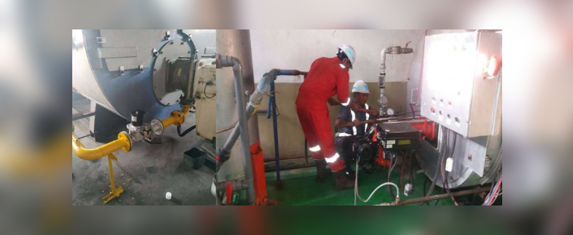

Industrial Boiler Services
Industrial boiler services encompass a comprehensive range of support activities aimed at ensuring the optimal operation, efficiency, and safety of industrial boiler systems across various sectors. These services are essential for maintaining continuous production, reducing downtime, and prolonging the lifespan of critical boiler equipment.
Installation and Commissioning
Professional boiler service providers offer expert installation services, ensuring that boilers are installed correctly according to manufacturer specifications and industry standards. This includes alignment, piping, electrical connections, and initial startup procedures to verify performance and safety.
Routine Maintenance
Regular maintenance is crucial for the smooth operation of industrial boilers. Service providers conduct routine inspections, cleaning, and testing of boiler components such as burners, tubes, controls, and safety devices. This proactive approach helps to identify potential issues early, prevent breakdowns, and optimize boiler efficiency.
Boiler cleaning service by PT Taruna Eka Setia
Emergency Repairs
Boiler service teams are equipped to respond quickly to unexpected failures or breakdowns. They have the expertise to diagnose problems swiftly and perform repairs to restore boiler functionality promptly. This minimizes downtime and reduces the impact on production schedules.
Upgrades and Retrofits
To improve efficiency, safety, or compliance with regulations, boiler service providers offer upgrade and retrofit solutions. This may involve installing energy-saving technologies, upgrading control systems, replacing outdated components, or converting boilers to use alternative fuels.
Boiler Efficiency Optimization
Efficiency assessments and optimization services aim to maximize the energy output of boilers while minimizing fuel consumption and emissions. This may involve tuning combustion systems, optimizing heat recovery, or implementing advanced control strategies to achieve peak performance.
Boiler retubing service by PT Taruna Eka Setia
Water Treatment and Chemical Services
Water quality is crucial for boiler longevity and efficiency. Service providers offer water treatment programs tailored to prevent scale buildup, corrosion, and contamination in boiler systems. They provide chemical treatments, water analysis, and monitoring to maintain optimal water conditions.
Training and Technical Support
Boiler service providers offer training programs for boiler operators and maintenance personnel to ensure safe and efficient operation. They also provide ongoing technical support, troubleshooting guidance, and access to expert advice to address operational challenges.
Fuel convertion by PT Taruna Eka Setia
Compliance and Regulatory Support
Boiler service teams stay updated with industry regulations and safety standards. They assist in compliance assessments, inspections, and documentation to ensure boilers meet regulatory requirements and maintain a safe working environment.
Environmental and Sustainability Services
Service providers may offer services focused on environmental stewardship, such as emissions testing, compliance with emissions regulations, and recommendations for eco-friendly boiler operation practices.
In summary, industrial boiler services are essential for maintaining the reliability, efficiency, and safety of boiler systems in industrial settings. By partnering with experienced service providers, industries can optimize boiler performance, minimize operational risks, and achieve long-term cost savings.
PT Taruna Eka Setia provides boiler repairs for large industries including:
- Boiler repair
- Cleaning boilers (fire tube & water tube boilers)
- Chemical cleaning, mechanical cleaning
- Hydrotest
- Safety valve settings
- Licensing from the Ministry of Manpower of the Republic of Indonesia
- Replacing fuel from diesel to gas or residue
- Burner modification
- Burner replacement
- Troubleshooting & boiler service contracts
- Boiler maintenance contract
- PCO periodic (Portable Combustion Optimizer) test and check
- Retubing, refractory and insulation of boilers and piping